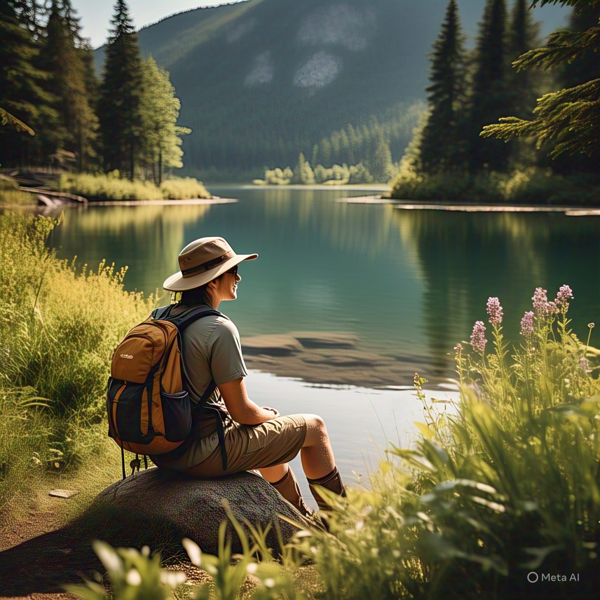

About Me
I’m a travel enthusiast who loves to capture the beauty of nature, architecture, and cultures. This page is a collection of my travel memories and dreams.
Photo Gallery


A Glimpse of My Journeys
Himalayan Serenity
This mesmerizing view was captured during a trek in the Himalayas. The crisp air, the sound of distant waterfalls, and the panoramic snow-capped peaks make it one of the most breathtaking experiences of my journey.
Travel Deeper – Cultures, Flavors & Untold Stories
"Go beyond tourist hotspots. Our videos dive into local traditions, street food secrets, and the heartbeat of every destination. Press play and travel with purpose."